Fête de l'Ile Charlemagne

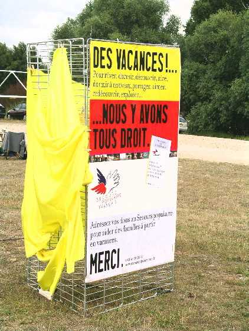
Organisée par le Secours Français, cette fête faisait appel pour l'animation au bon coeur des cervolistes, encouragé quand même par un déjeuner et la possibilité de se rencontrer et de montrer leurs merveilleuses créations...

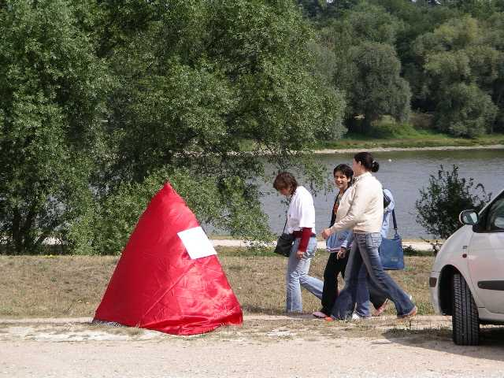
A l'arrivée sur le terrain, on retrouve les pyramides inaugurées l'an dernier pour figurer les ifs des "jardins" à la française... Le site est idéal pour le cerf-volant, plat et dégagé, en bordure de la Loire qu'on ne voit malheureusement pas.

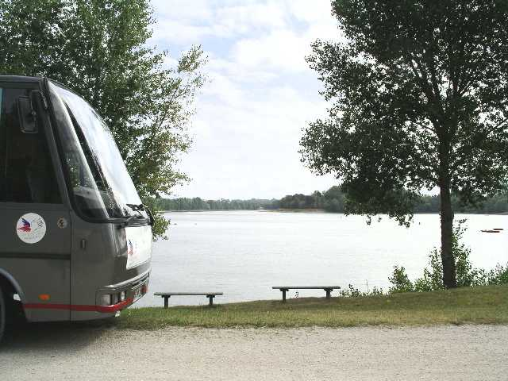
Mais il y a un bel étang au bord duquel le Car itinérant du Secours Français s'est garé...

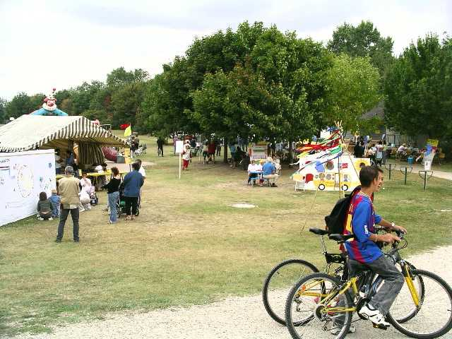
Le Secours a monté un village d'attractions diverses, en même temps qu'une buvette, un barbecue, un clown gonflable pour faire sauter les enfants, etc. !

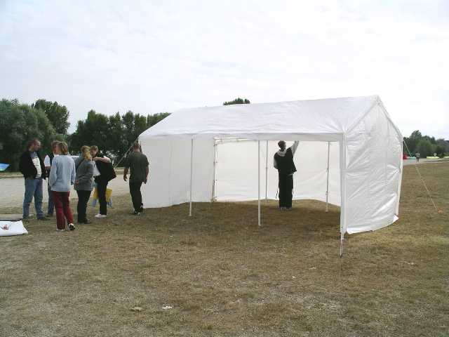
Vent de Folie est venu de Vierzon avec un barnum tout neuf pour abriter l'Atelier cerf-volant. Regardez le bien, car il n'est pas fait pour résister plus de 10 minutes au vent...

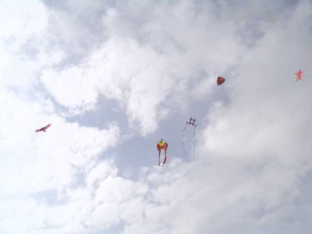
Pendant ce temps, les cerfs-volants montent à mesure des arrivées ! Olivier est un peu en retard car il a indiqué à tout le monde une fausse localisation, qu'il a suivie d'ailleurs lui-même...

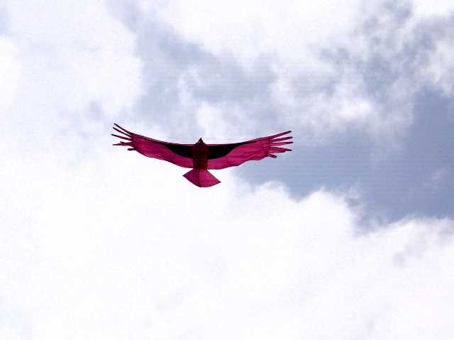
Mon Condor volera bien, malgré la turbulence derrière les arbres, des accrochages "normaux" et une petit panne de jeunesse en début d'après-midi !

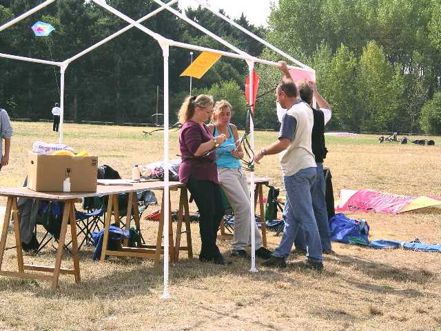
L'Atelier est monté. Le vent ayant gagné, le barnum est ramené à 2 sections, et sans toile, comme ça il résistera, na !

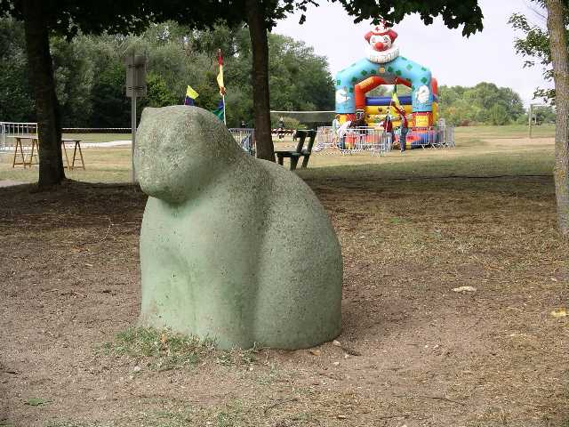
Dans le parc, un magnifique chat...

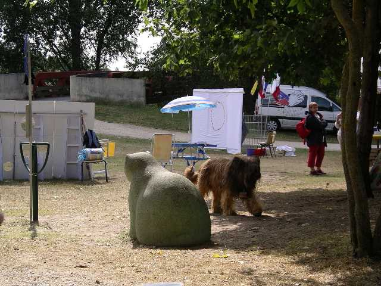
Logos en fait prudemment le tour un peu à l'écart, on ne sait jamais...

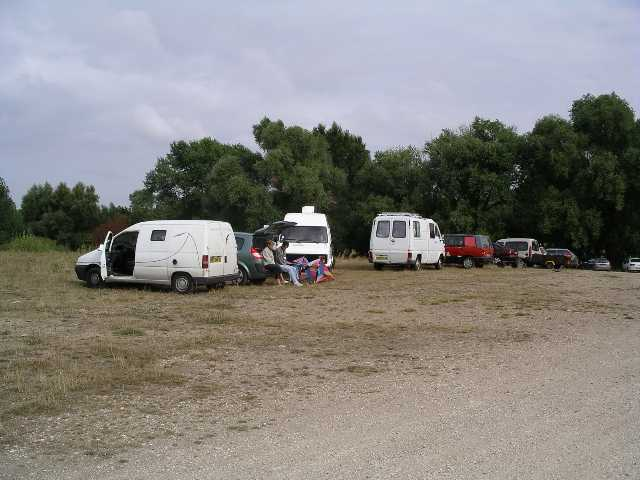
Le caravansérail des cervolistes prend forme à mesure des arrivées, personne n'a dormi sur la zone, réputée "chaude"...

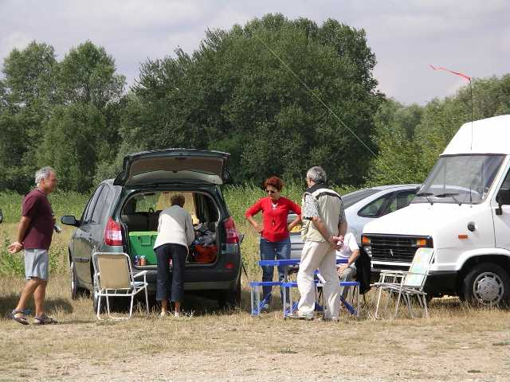
Marie-Claude a ouvert sa table, même si elle ne sait pas encore la refermer...

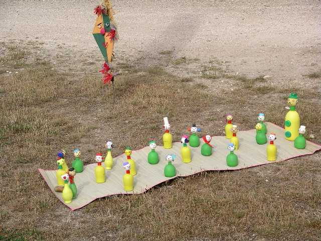
Mais, comme Fernando avec son cactus, elle a pris le temps de monter son JdV qui augmente à chaque prestation. Va bientôt falloir acheter une brouette !

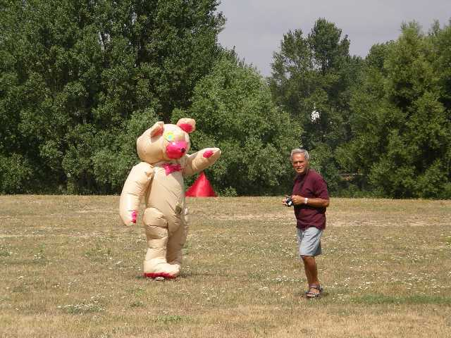
Tout à coup un ours arrive, dressé sur ses deux pattes ! Mais Joel n'a peur de rien...

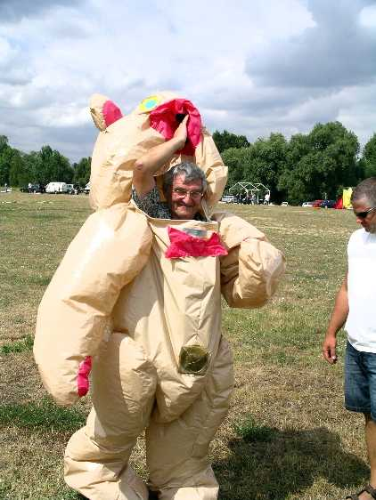
Jean-Claude dévoile tous les secrets en ouvrant la fermeture. L'ours est maintenu gonflé par un ventilateur dans le nombril...

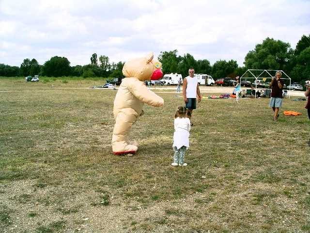
Il est si attirant que les petites filles viennent lui faire une bise sur le museau...

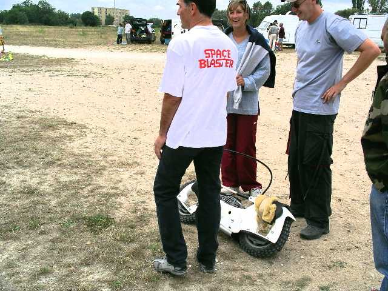
Qu'est-ce qu'on n'invente pas ! Un fondu vient présenter sa "moto" (australienne, je crois), sans selle, sans guidon, sans rien, quoi...

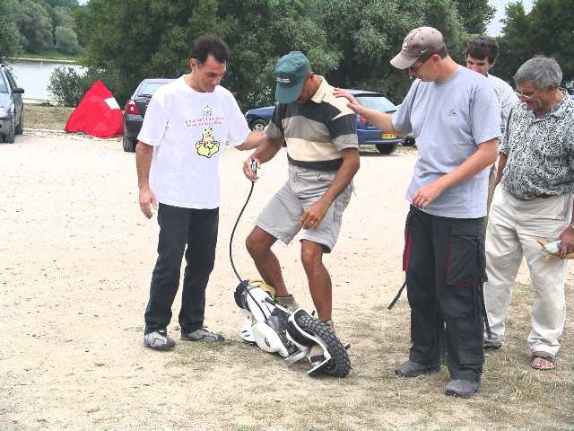
Ca se pilote comme un skate, avec juste une poignée des gaz. Jean Marc fera un essai, mais le plus difficile, c'est de démarrer, et ses pieds coincent dans les orifices prévus...

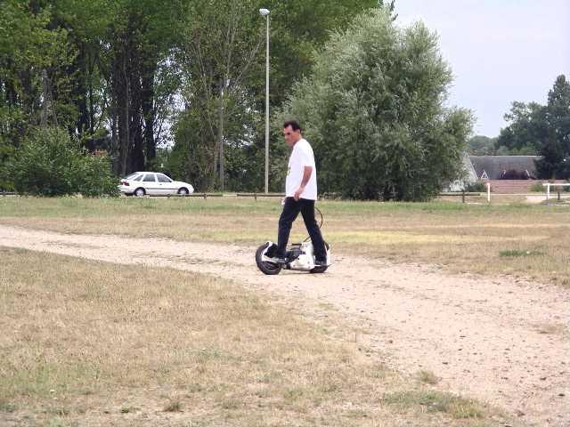
Mais le propriétaire a pourtant l'air très à l'aise ! D'après lui, l'engin plafonne à 35 km/h !

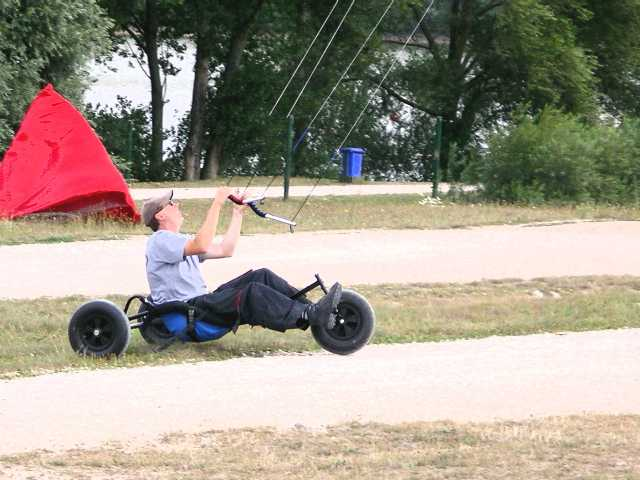
Mais Jean-Marc a amené son buggy à cerf-volant à lui, qu'il prêtera à qui veut. Seb sera de la partie aussi.

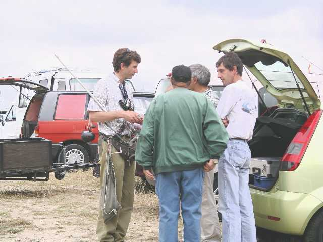
Les aérophotographes se montrent leurs engins et comparent leurs solutions, on peut en discuter des jours et des jours...

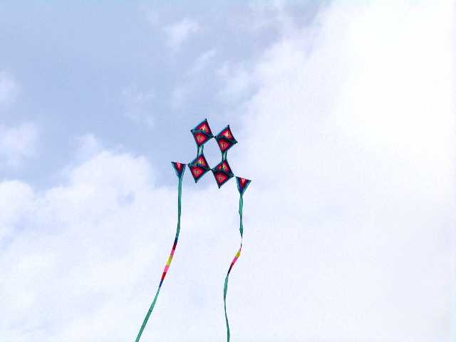
Joel a toujours son cerf-volant sans nom qui me plaît bien...

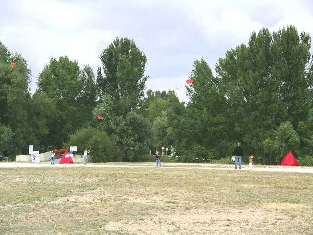
L'atelier cerf-volant réalisera un certain nombre de coccinelles...

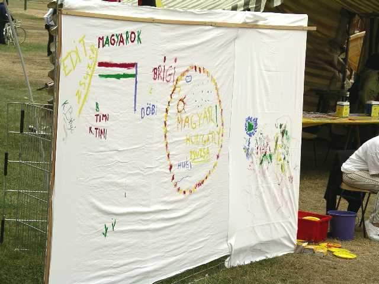
Le Secours crée aussi une oeuvre collective sous forme de fresque...

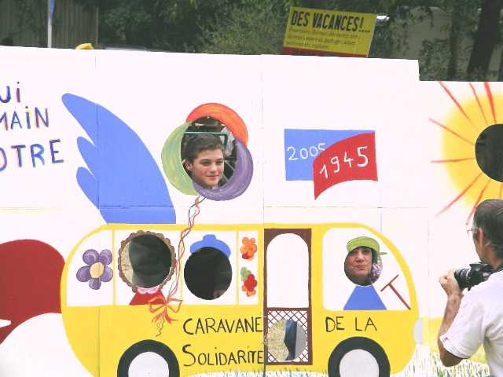
Et on peut se faire prendre en photo "en situation" dans le car itinérant.

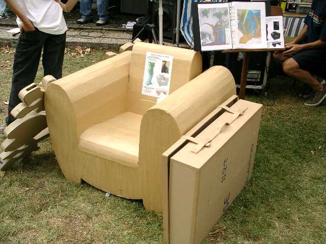
Un atelier propose d'apprendre à construire des objets en carton, et des gros ! Fauteuil, valise...

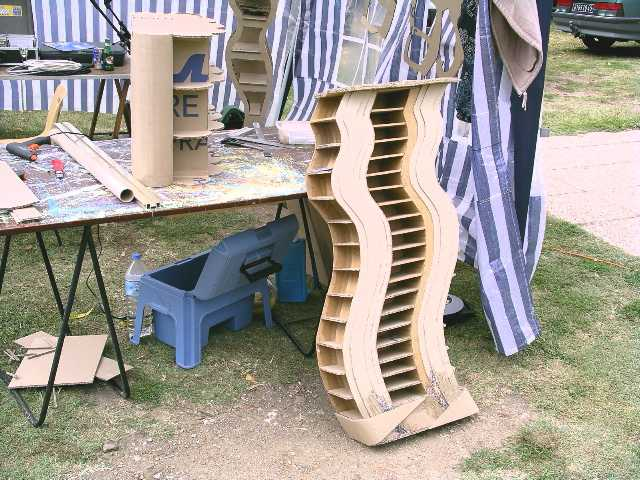
...meubles de rangement, il faut juste du carton ondulé, un cutter, de la colle... de la pratique et du sens esthétique !

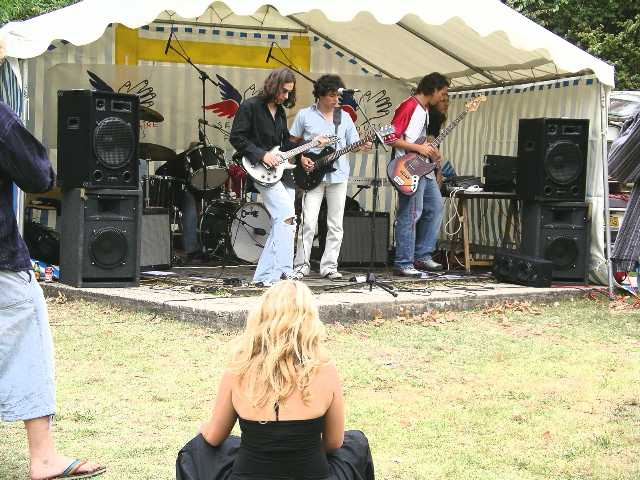
Il y a plein d'attractions. Un orchestre vient animer une bonne partie de la journée.

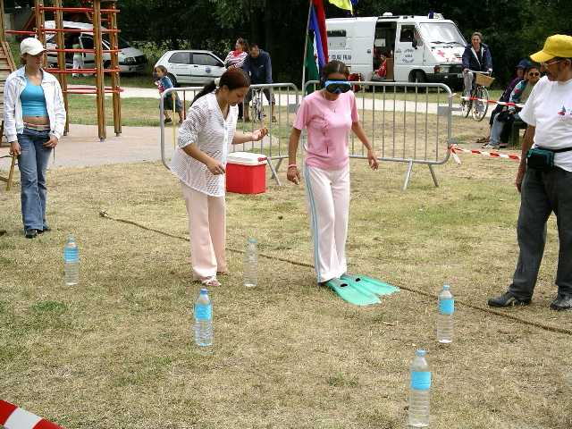
Des jeux... Ici, il faut reculer avec le masque et les palmes entre les bouteilles, en suivant les ordres de son guide !

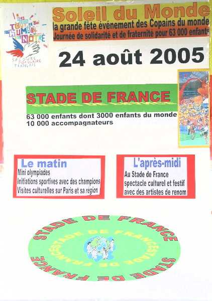
Journée animée, mais pas trop d'enfants. La grande fête, celle comme Chambord l'année dernière, sera en fait à Paris, au stade de France. La pub est un peu tardive, dommage...